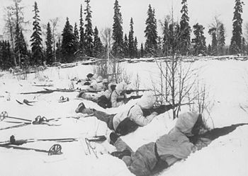
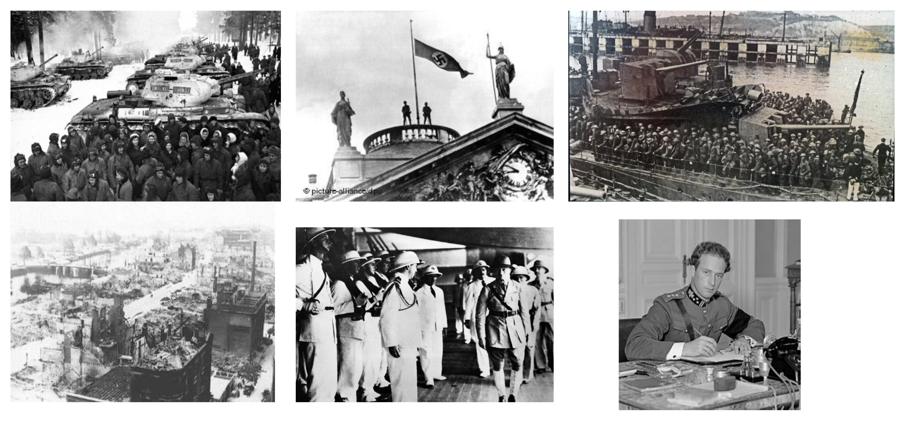

Setembro
Dia 1 : A Alemanha invade a Polônia. Exatamente às 4:34 da manhã três Stukas violam o espaço aéreo polonês em missão de ataque, dando início à Segunda Guerra Mundial.
Dia 3 : Inglaterra, França, Austrália, Índia e Nova Zelândia declaram guerra à Alemanha.
Dia 5 : Os alemães atravessam o Vístula. Os EUA declaram sua neutralidade.
Dia 10 : O Canadá declara guerra à Alemanha.
Dia 13 : O primeiro-ministro francês, Daladier, realiza o primeiro gabinete de guerra.
Dia 17 : A União Soviética invade a fronteira Leste da Polônia.
Dia 18 : Os soviéticos capturam a cidade de Vilnyus.
Dia 22 : Ameaçada a oeste pelos alemães e aleste pelos soviéticos, a cidade de Lvov rende-se.
Dia 27 : Varsóvia - capital da Polônia - é tomada, o governo polonês capitula.
Dia 28 : A fortaleza de Motlin capitula. Ribbentrop e Molotov se reúnem para decidir a partilha da Polônia.
 Setembro de 1939
Setembro de 1939
Outubro
Dia 6 : Hitler envia um plano de paz a Chamberlain. O primeiro-ministro britânico recusa.
Dia 14 : O submarino alemão U47 afunda o couraçado Royal Oak dentro da base naval de Scapa Flow.
Dia 17 : Retirada francesa do Mosela.
 Outubro de 1939
Outubro de 1939
Novembro
Dia 4 : EUA aprovam legislação específica de empréstimo aos aliados europeus para obtenção de material bélico.
Dia 7 : EUA declaram as águas em torno da França e Inglaterra como zona de guerra, proibindo a circulação de navios americanos.
Dia 8 : Atentado contra Hitler no Bürger-braükeller de Munique.
Dia 30 : URSS invade a Finlândia.
Novembro de 1939Dezembro
Dia 13 : Batalha do Rio da Prata: o encouraçado-de-bolso alemão, Almirante Graf Spee, enfrenta 3 cruzadores britânicos.
Dia 14 : A União Soviética é expulsa da Liga das Nações.
Dia 17 : O Graf Spee é afundado pela sua tripulação no porto de Montevidéu, no Uruguai.
Dezembro de 1939Janeiro
Dia 2 : Os russos iniciam uma ofensiva na Cariléia.
Dia 8 : A ofensiva soviética é repelida pelos finlandeses.
 Janeiro de 1940Fevereiro
Dia 15 : Os russos rompem a linha Mannerheim de defesa finlandesa.
 Fevereiro de 1940
Fevereiro de 1940
Março
Dia 12 : A Finlândia assina um tratado de paz com a URSS.
Dia 28 : Decisão franco-britânica de não concluírem, separadamente, armistícios ou paz.
 Março de 1940
Março de 1940
Abril
Dia 9 : O exército alemão inicia a ocupação da Dinamarca e invade a Noruega.
Dia 10 : Primeira Batalha Naval de Narvik.
Dia 13 : Segunda batalha naval de Narvik, culminando com a eliminação dos destroyers alemães.
Dia 14 : Desembraque inglês na Noruega, próximo a Narvik.
Dia 19 : Desembarque francês na Noruega.
Dia 24 : Derrota aliada na Noruega, em Lillehammer. Criação do comissariado do Reich para o país.
 Abril de 1940
Abril de 1940
Maio
Dia 10 : Alemanha invade a Bélgica, Holanda e Luxemburgo. Neville Chamberlain - Primeiro Ministro Britânico - renuncia, Winston Churchill ocupa o cargo.
Dia 14 : Bombardeio contra a cidade aberta de Rotterdam - 1000 civis mortos, 78.000 desabrigados. Os alemães rompem a frente francesa em Sedan.
Dia 15 : O exército holandês capitula.
Dia 17 : As tropas alemãs entrem em Bruxelas.
Dia 18 : Formado o novo gabinete de Reynauld, com Pétain, Daladier e Mandel.
Dia 19 : Weygand é nomeado Comandante-chefe do exército francês.
Dia 26 : Evacuação da Força Expedicionária Britânica em Dunquerque.
Dia 27 : O rei Leopoldo da Bélgica assina o armistício com a Alemanha.
 Maio de 1940Junho
Dia 3 : Os alemães bombardeiam Paris.
Dia 10 : Capitulação do exército Norueguês. A Itália declara guerra à Inglaterra e França.
Dia 11 : O governo francês refugia-se próximo a Tours. Conferência Churchill-Reynaud-Weygand.
Dia 13 : Paris é decretada cidade aberta.
Dia 14 : O exército alemão marcha sobre Paris.
Dia 18 : Os soviéticos invadem os estados bálticos.
Dia 19 : Os alemães atravessam o Loire. Heróica resistência dos cadetes de Saumur.
Dia 21 : Em Rethondes, Hitler receber os plenipotenciários franceses.
Dia 22 : A França assina o armistício com a Alemanha.
Dia 26 : Ultimato soviético à Romênia.
Dia 30 : O exército alemão inicia a ocupação das ilhas do canal da Mancha.
 Junho de 1940
Junho de 1940
Julho
Dia 1 : O governo francês instala-se em Vichy.
Dia 3 : Ataque inglês contra a frota francesa em Orã e Mers-el-Kébir.
Dia 5 : Rompimento das relações diplomáticas entre a França e a Inglaterra.
Dia 10 : Início da Batalha da Inglaterra.
Dia 11 : O Marechal Pétain assume a liderança do Governo de Vichy.
Dia 14 : A Espanha ocupa Tânger com o objetivo de manter a neutralidade da zona.
Dia 16 : Hitler dá a ordem de preparação para a Leão do Mar (invasão da Inglaterra).
 Julho de 1940
Julho de 1940
Agosto
Dia 3 : A Itália inicia a ocupação da Somália Britânica.
Dia 15 : A Luftwaffe intensifica os ataques sobre a Inglaterra.
Dia 29 : O governo de Vichy cria as Legiões Combatentes.
Agosto de 1940Setembro
Dia 3 : Primeiras entregas de destroyers americanos à Grã-Bretanha.
Dia 7 : Começo da *blitz* contra a cidade de Londres.
Dia 13 : O exército italiano invade o Egito.
Dia 15 : Ultimato japonês à França pela seção das bases navais da Indochina.
Dia 17 : Adiamento da operação Leão do Mar.
Dia 22 : Assinatura do acordo-franco-japonês para desembarque na Indochina.
Dia 25 : Os Estados Unidos limitam a entrega de petróleo ao Japão.
Dia 27 : Itália, Alemanha e Japão assinam o pacto Tripartite.
 Setembro de 1940
Setembro de 1940
Outubro
Dia 7 : O exército alemão marcha para a Romênia.
Dia 10 : A Royal Navy bombardeia Cherburgo.
Dia 12 : Vitória da marinha inglesa sobre os italianos ao largo da ilha de Malta.
Dia 23 : Hitler encontra-se com Franco em Hendaia e com Pétain em Montoire, no dia seguinte.
Dia 28 : Itália invade a Grécia.
 Outubro de 1940
Outubro de 1940
Novembro
Dia 5 : Roosevelt é reeleito para mais um mandato.
Dia 8 : Reide da RAF sobre Munique.
Dia 11 : Aviões do porta-aviões britânico Illustrious atacam os navios italianos ancorados em Taranto.
Dia 14 : O exército grego repele os italianos de volta à Albânia.
Dia 20 : A Hungria adere ao pacto Tripartite.
Dia 22 : O 9º Exército Italiano rende-se aos gregos.
Dia 23 : A Romênia adere ao pacto Tripartite.
 Novembro de 1940
Novembro de 1940
Dezembro
Dia 9 : Primeira ofensiva britânica contra os italianos, dirigido por Wavell.
Dia 11 : Os britânicos capturam Sidi Barrani, no Egito, aos Italianos.
Dia 17 : Os britânicos recapturam Sollum, Egito.
Dia 29 : Violento bombardeio contra Londres: incêndios na cidade.
Dezembro de 1940